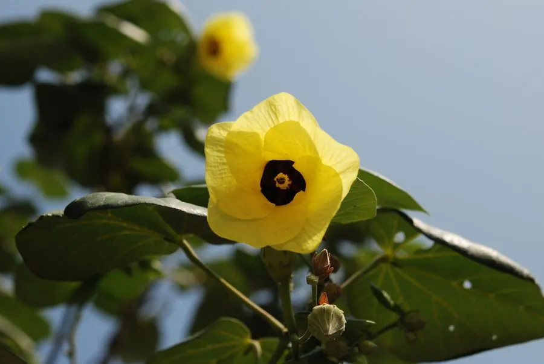

灌木与花木 · 植物界
黄槿 Hibiscus tiliaceus

锦葵科常绿灌木或小乔木，夏季开黄色五瓣花，花心紫红，耐盐耐湿，是华南海岸常见的防风与观赏树种。
- 分类
- 门被子植物门纲木兰纲目锦葵目科锦葵科属木槿属
- 栖息环境
- 海岸林缘、潮间带上缘与滨海沙地，耐盐耐湿
- 地理分布
- 中国华南、台湾、福建沿海；热带亚洲至太平洋岛屿
- 保护级别
- 暂无评估；中国未列入国家重点保护野生植物名录
物种志
黄槿为锦葵科木槿属常绿灌木或小乔木，高 3–6 米，树皮灰白色，小枝被星状毛。叶互生，圆心形至宽卵形，全缘或具浅齿，叶背密生灰白色绒毛。花单生于叶腋，花冠黄色，中心暗紫红色，花瓣 5 枚，花期 6–8 月，单朵花仅开一天；果实为蒴果，木质，果期 9–10 月。
黄槿原产热带亚洲至太平洋岛屿，中国华南、台湾及福建沿海常见，生于海岸林缘与潮间带上缘。它喜光，耐盐、耐湿、抗风，是海岸防风固沙与滨海绿化的优良树种。树皮纤维可制绳索，木材轻软可作器具，嫩叶与花可食用；因花冠黄色、花心紫红，盛开时十分醒目，也常植于公园与庭院观赏。
形态与习性
- 株高3–6 米，树皮灰白色
- 花期6–8 月，花黄色、花心紫红
- 果期9–10 月，蒴果木质
- 光照喜光，阳光充足
- 水分耐湿、耐盐，适生海岸
- 土壤滨海沙质土至壤土
- 主要用途海岸防风、滨海绿化，树皮制绳索
趣味知识
- 黄槿单朵花只开一天，清晨开放、傍晚凋谢。
- 它的花初开时黄色，花心紫红，凋谢前常变为橙红色。
- 黄槿耐盐耐湿，是海岸防风固沙的优良树种。
- 树皮纤维强韧，沿海居民曾用它制作绳索。